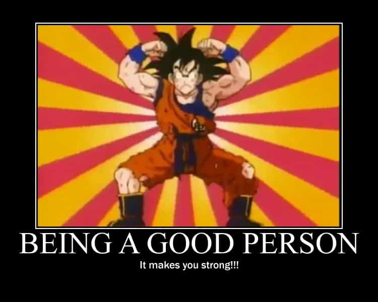

The history of rhetoric – the art of verbal persuasion – stretches back about 2500 years and its very basics are typically taught in high school in the Western hemisphere. It is also a particular subject at many universities around the world.
The classic Greek philosophers Empodocles, Protagoras, Gorgias, Isocrates, Plato and Aristotle have all made valuable contributions to this field. Plato criticized the unethical aspect of persuasiveness in the dialogue Gorgias and made other insights in Phaedrus. Aristotle made the subject more systematic in his work Rhetoric. In the Roman Empire Cicero and Quintilian are some of the most well-known figures in this regard.
Rhetoric have suffered various setbacks throughout history, but have regained its strength and relevance during the 20th and 21 centuries. Although the dark side of rhetoric is associated with mass psychology collectivism under the aegis of modern totalitarianism, it is accepted as something important and probably inevitable in our current world and democratic societies. Both the left and the right use it, although sometimes in quite different ways.
How about the individual male as he enters the world stage, whether it be a very small such, and even online to a significant degree? With the basic rhetoric triad of ethos, logos and pathos as a point of departure, I will give suggestions on how to improve one’s ability to persuade and be regarded as a more valuable and respectable person.
Ethos
Ethos is linked to a person’s character, and includes a whole plethora of different factors such as social status, appearance, life experience, moral conduct and behavior. The downside of this aspect is that most men will not be listened to even though they may have multiple strengths, for the very simple reason that only a few men can become billionaires, celebrities, lobbyists or politicians. It does not matter if you are smarter than PewDiePie since he has 56 million subscribers while you have 56 (or at least 56 lays I hope).
However, that is no reason to cry because a more average man can still improve his life a lot at his particular level and to some extent strive to reach higher grounds. More specifically it can mean to improve his earnings, body composition, dress style, social network, social capital and ethics. To have a pretty woman at his side will also be a benefit and make him look good. No one listens to losers and why should they?
With regard to actual speech, or actio as it is called in rhetoric, confidence, voice, posture and body language all matter.
Further, do not be a complete macho guy but do not act like a weak male either. Find that optimal balance, vary the way you speak, and change somewhat depending on audience and context. Practice and real experience are crucial ingredients. Study other males, avoid obvious mistakes, but find your own particular way of doing it.
Logos
Logos is the intellectual and logical dimension of rhetoric ability and affects the way you may able to influence people. I know that many think that it is only a waste of time to go to university, but that notion should be approached with some caution. To have a master’s or doctoral degree, even if it often has little significance from a mere income perspective, imply a certain level of intellectual sophistication and/or create incentives for to obtain more advanced knowledge.
Regardless, you should be able to better discern knowledge and information in order to improve your logos. No one has complete knowledge and sometimes it is wise to just accept that you do not know this or that, but for example politics, economics, cultural studies and genetics are not rocket sciences. Use unimpeachable sources, to the extent that such exist, and avoid low-value and flawed studies. Think thrice before accepting mainstream science as truths.
As for relevance, facts and logic do not always – far from it – win, but that does not mean that you should neglect it. People will respect a knowledgeable man, and notice that you are well-informed. In this way, a man’s logos will positively affect his ethos in a benevolent feedback loop.
Pathos
Lastly, pathos is related to feelings. A masculine man will almost instinctively reject, even scorn, emotionalism.
Still, the wise man knows that emotions affect people under various circumstances, and often overlap common sense morals, such as to be horrified by war, rape, murder and other consequences of the darker shades of the human psyche. Therefore an appeal to emotions can be important and will not even conflict a more aloof and rational image.
I am not a super-big Trump fan but I’ll have to admit that I like his persuasive way of stating obvious common sense ideas about right and wrong. Instead of trying to appear like a virtuous man he just asserts what is right or wrong and then moves on.
Additionally, to be upset is only one type of emotion. Two of the historical functions of classic rhetoric were to entertain and please the audience. Wittiness, discussed in Aristotle’s The Nicomachean Ethics, is considered as at least a lesser virtue. Therefore, a sense of humor is a powerful weapon and a definitive part of the arsenal.
Yet a delicate balance is required, and humor should not be the backbone of a man’s persuasiveness (if he is not comedian, obviously). On the other hand he probably could not be without it either.

Conclusion
As has been illustrated, these three main elements of rhetoric do not exclude but complement each other. Strong logos and pathos influence a man’s ethos in a positive feedback loop and might be a key to gradually rise to higher grounds, whether it is only within the frames of a man’s private life and workplace, or a more socially important occupation as a politician or public debater.
Looked upon in this broader sense, rhetoric improvement becomes almost the same as general self-improvement, which transcends the traditional conduct of the art of speech.
Read More: How To Recognize Meaningsless Rhetoric From Masters Of Deception